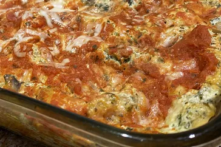

Spinach Lasagne

A delightful lasagne for spinach lovers
This lasagne is made with fresh spinach and plenty of cheese—ricotta, Romano, and mozzarella. This can be made without the spinach, but it's an easy way to get more vegetable into a day.
Baked in a 9x13-inch pan, this dish requires 20 minutes of prep time and 1 hour 15 minutes of cook time. Makes 12 servings. (Recipe courtesy of allrecipes.com)
Ingredients:
- 15 lasagna noodles
- 2 tablespoons olive oil
- 1 cup chopped fresh mushrooms
- 1 cup chopped onions
- 1 tablespoon minced garlic
- 2 cups fresh spinach
- 3 cups ricotta cheese
- ⅔ cup grated Romano cheese
- 1 egg
- 1 teaspoon salt
- 1 teaspoon dried oregano
- 1 teaspoon dried basil leaves
- ½ teaspoon ground black pepper
- 3 cups shredded mozzarella cheese
- 3 cups tomato pasta sauce
- 1 cup grated Parmesan cheese
Steps:
- Preheat the oven to 350 degrees F (175 degrees C).
- Bring a large pot of lightly salted water to a boil. Add lasagna noodles and cook for 8 to 10 minutes or until al dente; drain.
- Meanwhile, heat olive oil in a skillet over medium-high heat. Add mushrooms, onions, and garlic and cook until onions are tender; drain excess liquid and cool.
- At the same time, bring a small pot of water to a boil; add spinach and simmer for 5 minutes. Drain and cool slightly; squeeze out any excess liquid and finely chop.
- Combine ricotta cheese, Romano cheese, egg, salt, oregano, basil, and pepper in a bowl. Add cooled mushroom mixture and spinach; beat with an electric mixer on low speed for 1 minute.
- Lay 5 lasagna noodles in the bottom of a 9x13-inch baking dish. Spread 1/3 of the ricotta-spinach mixture over noodles, then sprinkle with 1 cup mozzarella cheese and 1/3 cup Parmesan cheese. Spread 1 cup pasta sauce over top. Repeat layers two more times, then cover with aluminum foil.
- Bake in the preheated oven for 1 hour. Cool 15 minutes before serving.